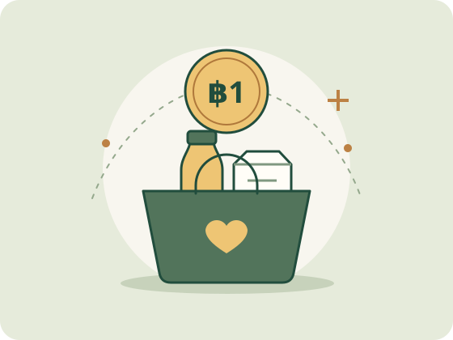

PromptPay
Verified PromptPay QR code
placeholder
placeholder
Give what you can
Choose an amount that feels right for you. We pool small gifts to buy rice, cooking oil, and other essentials for people in Mae Sot.

Once payment details are available, choose PromptPay or bank transfer, enter an amount from ฿1, and check the recipient name before confirming.
Monthly donors
A regular monthly gift helps us estimate what we can buy, plan food runs in advance, and shop around for supplies. Choose a monthly amount you can comfortably keep up with.
Once payment details are posted, you can make a manual transfer each month on a day that suits you.
Our spending updates will show how much we received, how much we spent on each category, and how much is available for the next run.